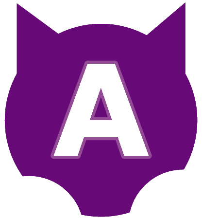

<nav class="navbar sticky-top">
    <a class="navbar-brand" routerLink="/home">
        <div class="d-inline-flex align-items-center">
            
            <h1>cude</h1>
        </div>
    </a>
    <div class="d-flex flex-row-reverse">
        <div class="p-2">
            <button type="button" class="btn btn-warning" routerLink="/asistence">Asistencia al animal</button>
        </div>
        <div class="p-2">
            <button type="button" class="btn btn-primary" routerLink="/addAnimal">Añadir un animal</button>
        </div>
    </div>
</nav>
